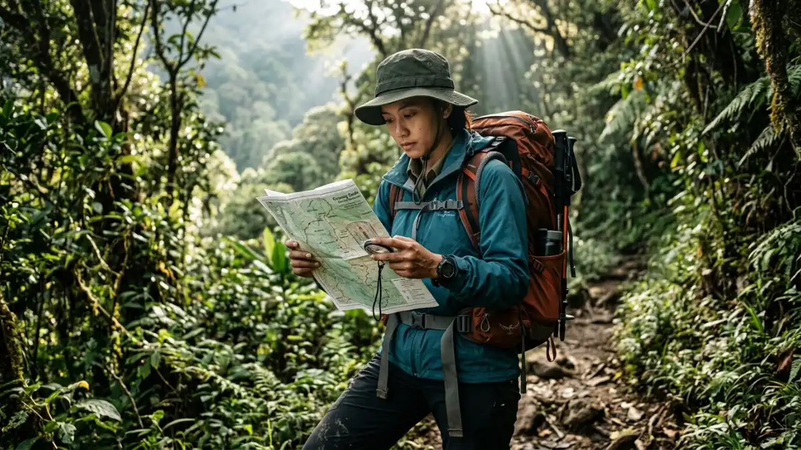
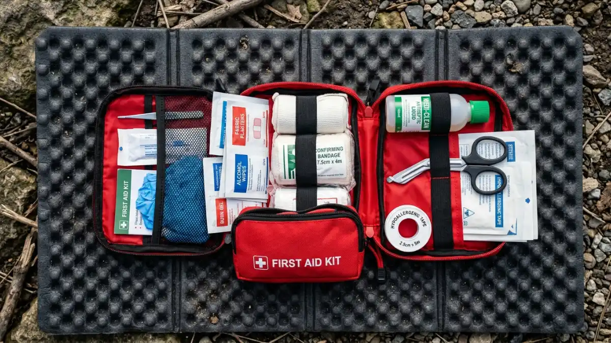

Keselamatan adalah prioritas utama yang harus dipahami setiap camper sebelum berangkat ke alam terbuka.Keselamatan camping di alam terbuka bergantung pada tiga hal utama: persiapan yang matang sebelum berangkat, pengambilan keputusan yang rasional di lapangan, dan kemampuan mengenali serta merespons kondisi darurat dengan tepat.
Mengapa Keselamatan Adalah Prioritas Utama Saat Camping?
Alam terbuka adalah lingkungan yang indah tapi tidak dapat diprediksi sepenuhnya. Berbeda dari lingkungan perkotaan, tidak ada layanan darurat yang bisa tiba dalam hitungan menit.
Di alam terbuka, respons pertolongan bisa memakan waktu berjam-jam bahkan berhari-hari. Karena itu, pencegahan jauh lebih penting daripada penanganan.
Pemahaman dasar tentang keselamatan camping bukan berarti kamu harus takut atau paranoid. Justru sebaliknya dengan pemahaman yang baik, kamu bisa menikmati camping dengan jauh lebih percaya diri dan bebas.
Apa Saja Risiko Paling Umum Saat Camping?
Risiko paling umum saat camping meliputi hipotermia, dehidrasi, tersesat, kecelakaan fisik ringan, dan paparan satwa liar semua bisa diminimalkan dengan persiapan dan pengetahuan yang tepat.
Hipotermia
Hipotermia terjadi ketika suhu tubuh turun di bawah 35 derajat Celsius akibat paparan suhu dingin, angin, atau basah kuyup.
Gejala awal meliputi tubuh menggigil terus-menerus, kulit pucat, dan kelelahan yang tidak normal. Pada tahap lebih lanjut, penderita bisa mengalami bicara cadel dan kehilangan koordinasi.
Pencegahan hipotermia:
- Gunakan sistem pakaian berlapis yang tepat
- Ganti pakaian basah segera setelah terkena hujan atau keringat berlebih
- Konsumsi makanan berkalori tinggi dan minuman hangat secara rutin
- Hindari aktivitas berat setelah matahari terbenam di suhu dingin
Dehidrasi
Dehidrasi di alam terbuka sering tidak disadari karena tubuh kehilangan cairan lebih cepat melalui keringat dan pernapasan, apalagi di ketinggian. Gejala meliputi sakit kepala, pusing, urine berwarna gelap, dan kram otot.
Minumlah air secara teratur tanpa menunggu merasa haus. Kebutuhan air meningkat signifikan saat beraktivitas fisik di alam terbuka minimal dua liter per orang per hari, lebih banyak saat cuaca panas atau aktivitas berat.
Tersesat
Tersesat di alam terbuka adalah kondisi yang serius tapi bisa dicegah. Selalu bawa peta fisik area camping dan pelajari jalur utama sebelum berangkat. Jangan mengandalkan GPS smartphone karena baterai bisa habis dan sinyal tidak selalu tersedia.

Perlengkapan P3K yang lengkap adalah salah satu aspek keselamatan camping yang tidak boleh diabaikan.Bagaimana Cara Menangani Kondisi Darurat Saat Camping?
Penanganan darurat saat camping mengikuti prinsip dasar STOP: Stop (berhenti), Think (berpikir), Observe (amati situasi), Plan (buat rencana) sebelum mengambil tindakan apapun.
Jika Tersesat
Langkah yang harus dilakukan jika tersesat:
- Berhenti bergerak — jangan panik dan jangan terus berjalan tanpa arah
- Amankan diri — cari tempat yang terlindung dari angin dan hujan
- Beri sinyal — gunakan peluit (tiga tiupan adalah sinyal darurat universal), cermin, atau warna cerah
- Hubungi bantuan — jika masih ada sinyal, hubungi nomor darurat atau tim SAR
- Tunggu pertolongan — jika kamu sudah memberi tahu seseorang tentang rencana camping kamu, pertolongan akan datang
Jika Ada Anggota Kelompok yang Terluka
- Stabilkan kondisi korban terlebih dahulu jangan pindahkan jika ada kemungkinan cedera tulang belakang
- Hubungi bantuan darurat sesegera mungkin
- Jika memungkinkan, satu orang tetap bersama korban sementara yang lain mencari bantuan
- Gunakan P3K yang dibawa untuk penanganan luka ringan
Jika Cuaca Tiba-tiba Berubah Ekstrem
- Masuk ke dalam tenda dan pastikan tenda dipatok dengan kuat
- Hindari pohon tinggi dan area terbuka saat petir
- Jika berada di jalur pendakian, turun ke elevasi lebih rendah jika ada petir
- Jangan menyeberangi sungai yang debitnya meningkat akibat hujan di hulu
Prinsip Leave No Trace: Etika Camping yang Wajib Dipahami
Leave No Trace adalah prinsip etika camping yang berarti meninggalkan alam dalam kondisi yang sama atau lebih baik dari saat kamu tiba.
Prinsip ini bukan hanya tentang etika, tapi juga tentang keselamatan kolektif dan kelestarian alam untuk generasi berikutnya.
Tujuh prinsip Leave No Trace:
- Rencanakan perjalanan dengan matang
- Berjalan dan berkemah di permukaan yang tahan lama
- Kelola sampah dengan benar bawa pulang semua sampahmu
- Jangan mengambil apapun dari alam
- Minimalkan dampak api unggun
- Hormati satwa liar jangan memberi makan atau mendekati terlalu dekat
- Hormati pengguna alam lainnya
Tips Keselamatan Api Unggun Saat Camping
Api unggun yang tidak dikelola dengan benar adalah salah satu penyebab utama kebakaran hutan. Ini adalah tanggung jawab serius yang wajib dipahami setiap camper.
- Gunakan hanya area api yang sudah tersedia jika camping di camping ground resmi
- Jangan buat api unggun di area yang dilarang atau saat cuaca berangin kencang
- Jangan pernah tinggalkan api tanpa pengawasan, bahkan sesaat
- Matikan api sepenuhnya sebelum tidur: siram dengan air hingga tidak ada asap sama sekali, aduk abu, dan siram kembali
- Jangan bakar sampah plastik atau kemasan makanan
Kesimpulan
Keselamatan camping bukan tentang ketakutan terhadap alam, tapi tentang respek dan kesiapan. Tiga langkah paling penting: beri tahu orang lain sebelum berangkat, kenali risiko di lokasi yang kamu tuju, dan bawa perlengkapan keselamatan dasar yang memadai.
Dengan persiapan yang benar, camping di alam terbuka Indonesia bisa menjadi pengalaman yang aman, menyenangkan, dan tak terlupakan.
FAQ
Nomor darurat apa yang harus dihubungi jika terjadi kecelakaan saat camping di Indonesia?
Nomor darurat nasional Indonesia adalah 112 (berlaku untuk semua layanan darurat). Untuk pendakian di taman nasional, simpan juga nomor pengelola taman nasional atau pos pendakian terdekat. Basarnas (Badan SAR Nasional) bisa dihubungi di nomor 115.
Bagaimana cara melindungi diri dari satwa liar saat camping?
Simpan semua makanan dalam wadah tertutup rapat atau gantung di tempat yang tidak bisa dijangkau satwa. Jangan makan di dalam tenda. Buang sisa makanan dengan benar. Jika bertemu satwa liar, jangan panik, jangan berlari, dan jangan memancing interaksi lebih lanjut. Mundur perlahan sambil menghadap satwa tersebut.
Apakah perlu membawa obat-obatan khusus untuk ketinggian?
Jika kamu camping di ketinggian di atas 2.500 mdpl, risiko Acute Mountain Sickness (AMS) atau penyakit ketinggian perlu diperhitungkan. Gejalanya meliputi sakit kepala, mual, dan pusing. Obat seperti acetazolamide (Diamox) kadang digunakan sebagai pencegahan, tapi penggunaannya harus atas rekomendasi dokter. Yang paling penting adalah aklimatisasi: naik bertahap dan istirahat yang cukup.